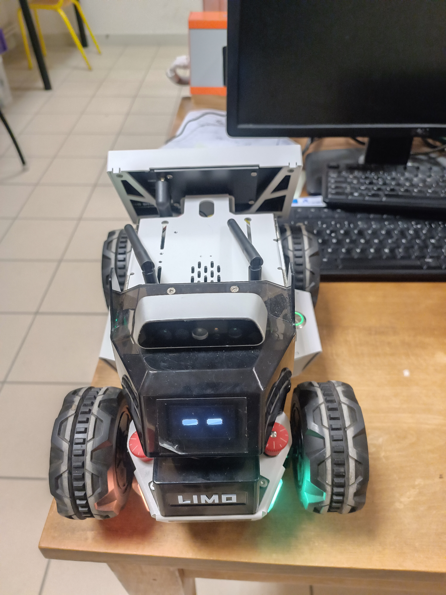

Mobile robotics · 2024 – 2025
Mapping & Autonomous Navigation with a LIMO Robot
Enabled a LIMO mobile robot to explore an unknown environment, build its own map and navigate it autonomously.
- Real-time mapping with 2D LiDAR SLAM (GMapping) under ROS 1 and Python.
- Localization on the map with AMCL.
- Path planning and obstacle avoidance with move_base.